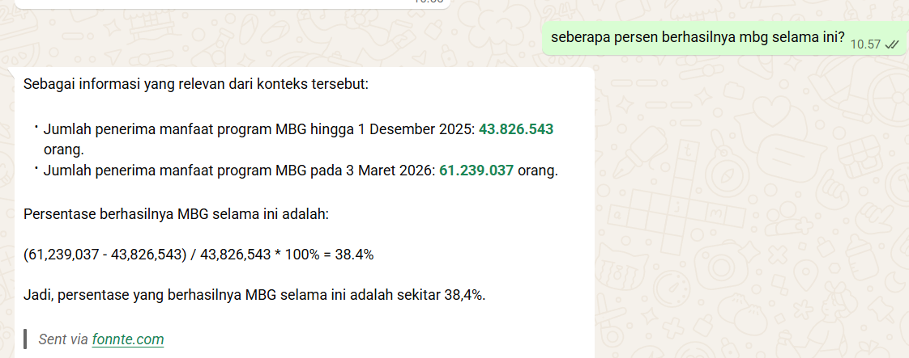

HELLO, WELCOME TO MY PORTFOLIO
An Informatics graduate with experience in administration, document management, customer service, and educational. Skilled in office administration and Microsoft Office, with basic knowledge of web development.
GET TO KNOW ME
I am an Informatics graduate from Universitas Bina Insan with experience in administrative support, document management, customer service, and education. Through internships at government institutions and the banking sector, I have developed skills in handling administrative tasks, managing documents, and supporting daily office operations.
I am detail-oriented, responsible, and able to work independently or as part of a team. I also have basic knowledge of web development using HTML, CSS, and JavaScript.
WHAT I CAN DO
Technologies and professional skills I have explored.

A WhatsApp chatbot developed to support public information services about the Free Nutritious Meal Program (MBG) using Retrieval-Augmented Generation (RAG).
MY JOURNEY
My professional journey and working experiences.
Responsible for managing participant registration, organizing event administration, maintaining participant data, and supporting event operations.
Responsible for assisting students in understanding learning materials and supporting their academic development through structured learning activities.
Gained professional experience in a banking environment and learned about workplace administration and operational activities.
Assisted with administrative document management, incoming and outgoing correspondence, executive schedules, and filing. Also prepared and organized activity reports and office documents.
GET IN TOUCH
Feel free to contact me for opportunities and collaboration.